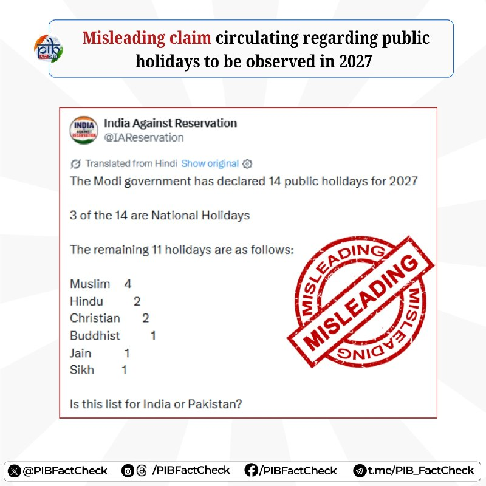

वर्ष 2027 के केंद्रीय अवकाशों पर भ्रामक दावा खारिज, DoPT ने जारी की सूची
पीआईबी फैक्ट चेक ने वर्ष 2027 के दौरान दिल्ली में केंद्रीय सरकारी कार्यालयों में छुट्टियों को लेकर फैल रहे दावे को खारिज किया है। कार्मिक मंत्रालय के अनुसार, कुल 17 राजपत्रित अवकाश तय किए गए हैं।

कार्मिक और प्रशिक्षण विभाग (DoPT) ने वर्ष 2027 के लिए दिल्ली और नई दिल्ली स्थित केंद्रीय सरकार के कार्यालयों में अवकाश की आधिकारिक सूची जारी कर दी है। इसके तहत कुल 17 अनिवार्य यानी राजपत्रित अवकाश तय किए गए हैं।
सोशल मीडिया पर इन छुट्टियों की संख्या को लेकर एक भ्रामक दावा वायरल हो रहा था, जिसे पीआईबी फैक्ट चेक यूनिट ने गलत बताया है। आधिकारिक आदेश के अनुसार, इस सूची में पांच प्रमुख त्योहार भी शामिल हैं।
सरकार ने नागरिकों से अपील की है कि किसी भी प्रकार की असत्यापित जानकारी को आगे साझा करने से बचें और हमेशा आधिकारिक स्रोतों से ही तथ्यों की पुष्टि करें।
और पढ़ें
हर कोई IAS नहीं बन सकता, स्किल डेवलपमेंट और व्यावहारिक ज्ञान जरूरी: अवध ओझा
आजतक मास्टरक्लास 2026 में यूपीएससी कोच अवध ओझा ने कहा कि युवाओं को सिर्फ डिग्री के पीछे भागने के बजाय व्यावहारिक कौशल और समस्याओं को सुलझाने की क्षमता पर ध्यान देना चाहिए।
राष्ट्रीयसलमान खान ने 'दबंग 4' में चुलबुल पांडे के रूप में वापसी की पुष्टि की
अभिनेता सलमान खान ने अपनी लोकप्रिय फिल्म फ्रेंचाइजी 'दबंग' के चौथे हिस्से की पुष्टि कर दी है। उन्होंने इसके साथ ही 'बजरंगी भाईजान 2' को लेकर भी अपनी बात रखी है।
राष्ट्रीयफिल्म 'पद्मावत' की शूटिंग के दौरान रणवीर सिंह को पड़े थे 24 थप्पड़
दिग्गज अभिनेता रजा मुराद ने एक इंटरव्यू में खुलासा किया है कि फिल्म 'पद्मावत' के एक सीन को परफेक्ट बनाने के लिए रणवीर सिंह को 24 बार थप्पड़ खाने पड़े थे, जिससे उनका गाल सूज गया था।
राष्ट्रीयगोरखपुर में तेज रफ्तार ट्रक की टक्कर से हाथी की मौत, महावत घायल
उत्तर प्रदेश के गोरखपुर में एनएच-24 पर तेज रफ्तार ट्रक की टक्कर से सड़क किनारे चल रहे एक हाथी की मौके पर ही मौत हो गई, जबकि महावत और एक अन्य युवक गंभीर रूप से घायल हो गए।